Research Postgraduate Students
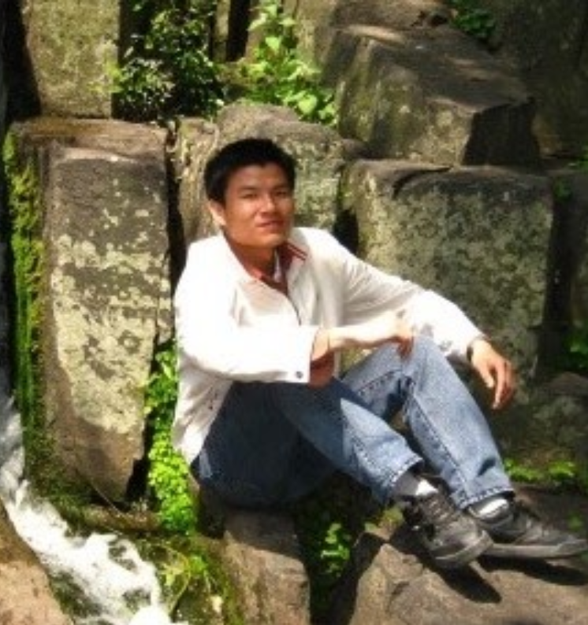
Huang Xin
Joint PhD programme between HKU and Imperial College, jointly supervised by Dr C. O’Sullivan. Graduated in 2014; six journal papers came from his thesis. Now Associate Professor at Tongji University.
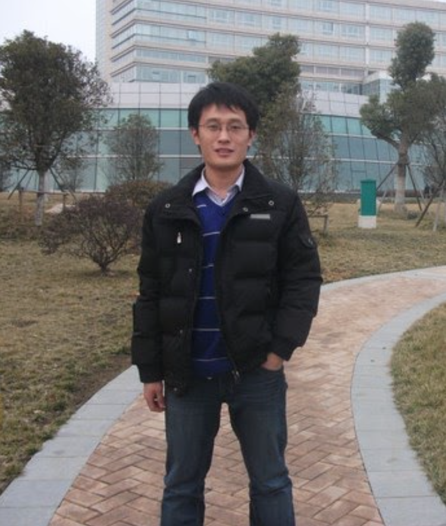
Duan Kang
Developed a DEM approach for inherently anisotropic rocks and its application to field-scale problems. Graduated in 2016; five journal papers came from his thesis. Now Professor at Shandong University.
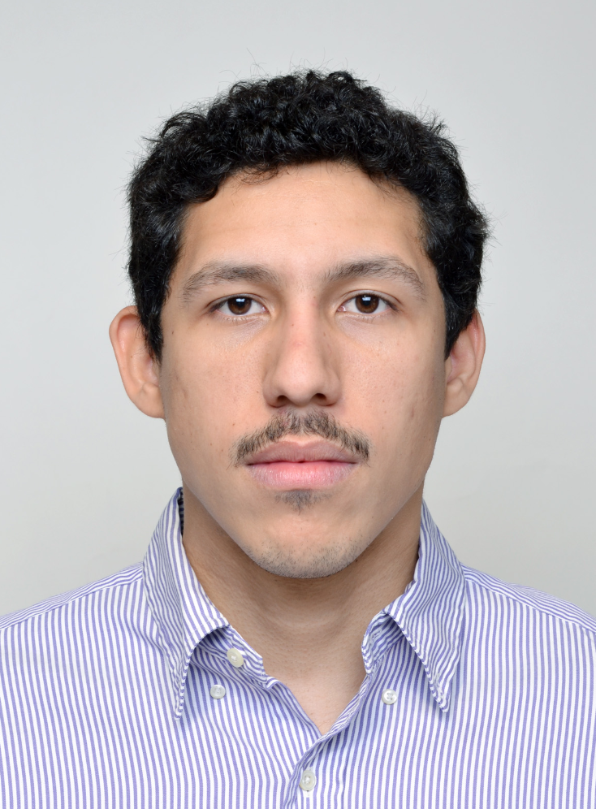
Juan Camilo Lopera Perez
Used DEM to study static liquefaction and the potential of sand–rubber mixtures for ground improvement. Graduated in 2016; seven journal papers came from his thesis. Now at AECOM in Hong Kong.
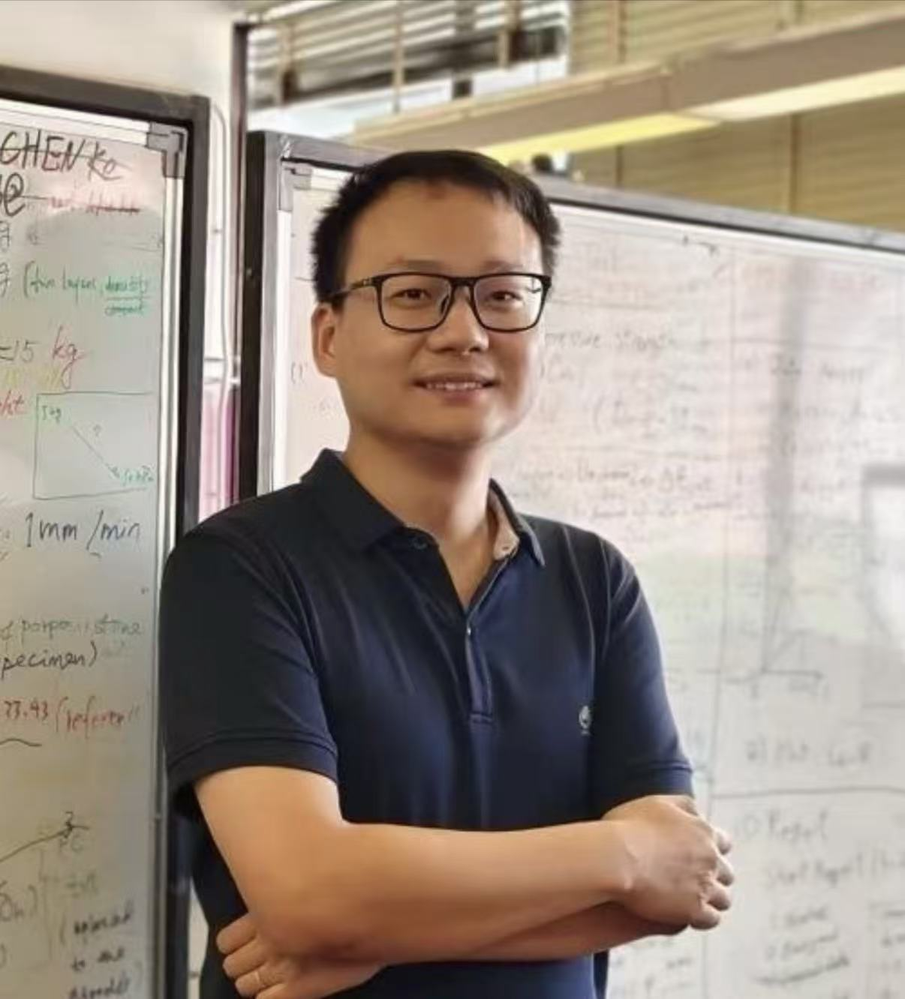
Jing Lu
Studied fluid–particle interactions, free-surface granular flows, and grain-size segregation. Graduated in 2017; later worked as a postdoctoral researcher at Northwestern University and is now an Associate Professor at Tsinghua University.
Yang Gengchao
Studied pore-scale submarine landslide dynamics and runout prediction. Graduated in 2019; now Associate Professor at Sun Yat-sen University.
Yang Shuocheng
His research develops a basal friction model from particle-scale simulations and applies it to large-scale continuum modeling of avalanches and debris flows. He received Bachelor’s and Master’s degrees from Hunan University and Tongji University.
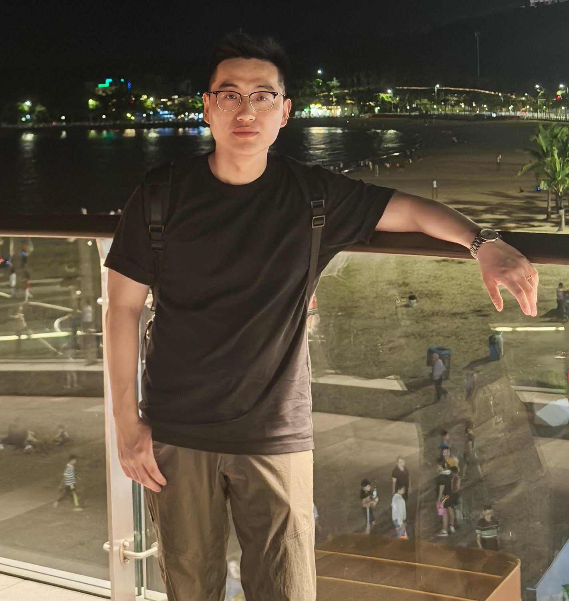
Sun Yuan (Alex)
His PhD research investigates cracking in intact and flawed rocks across laboratory and field scales. He received Bachelor’s and Master’s degrees from Wuhan University. He now works in SiCARRIER.
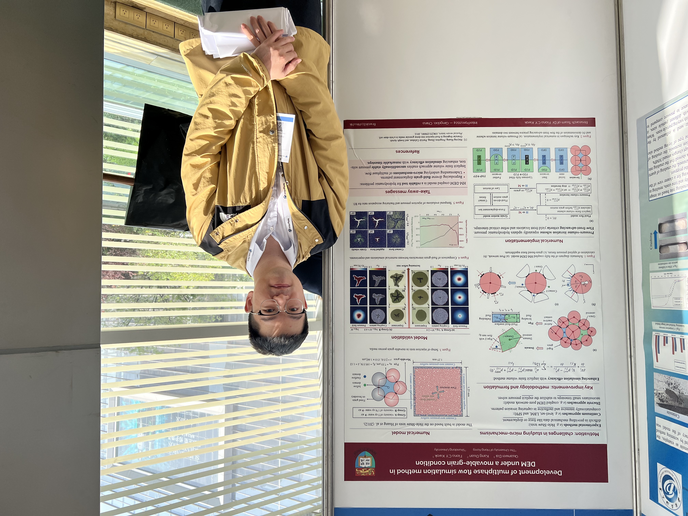
Dai Quanwei (David)
His research uses coupled hydro-mechanical analysis to characterize multiphase flow in intact reservoirs represented by bonded porous media. He holds a Bachelor’s degree from Shanghai Normal University, including a study year at Edinburgh Napier University, and a Master’s degree from Imperial College London.
Wang Teng
His research links microscopic entrainment mechanisms with macroscopic flow behavior and entrainment rates to develop a physics-based predictive framework. He graduated first class from Harbin Institute of Technology and completed a Master’s degree at Imperial College London.
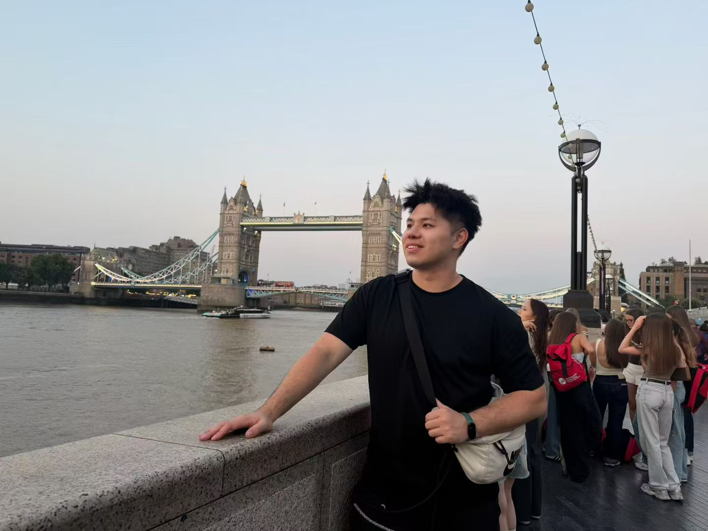
Ke Feihu
His research investigates deformation and fracture caused by fluid injection into saturated cohesive granular media. He graduated first class from the University of Sydney, received the University Medal, and holds the HKU Presidential Scholarship.
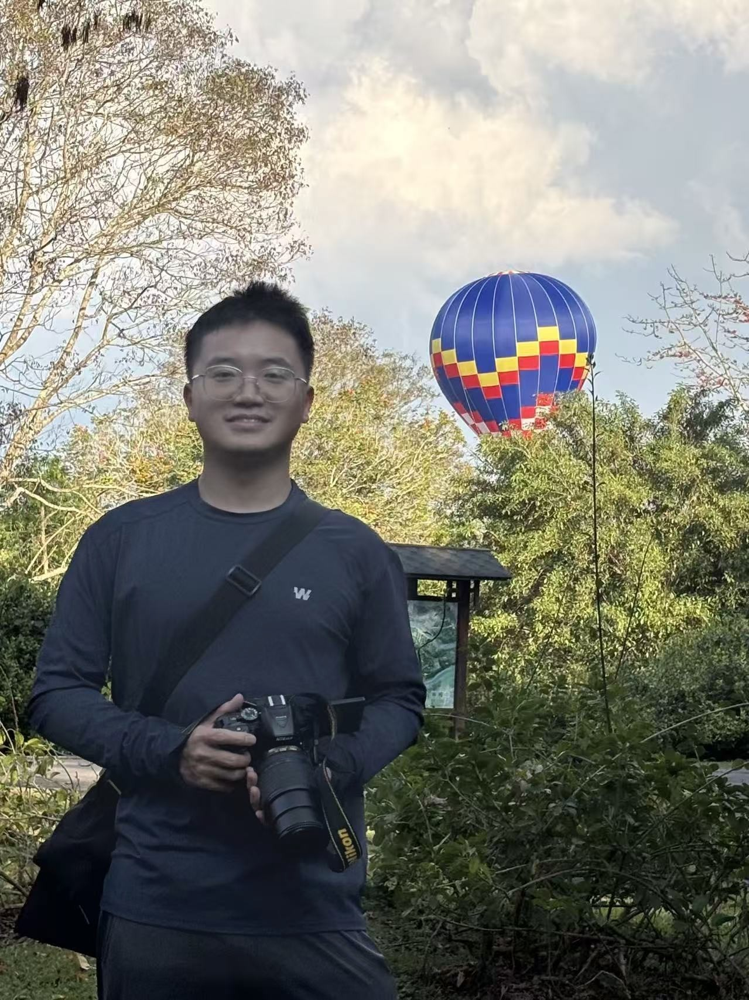
Liu Asen
His research investigates waste materials for stabilizing marine deposits in Hong Kong reclamation projects. He received a Bachelor’s degree from Ocean University of China and a Master’s degree from Tianjin University.
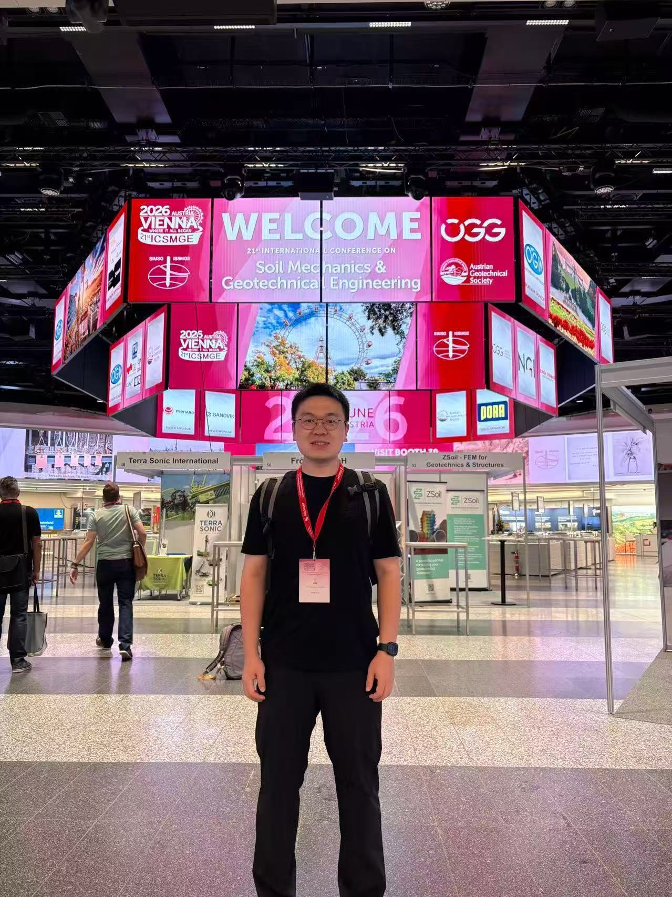
Han Xu
He graduated first class from Tongji University with Bachelor’s and Master’s degrees and is a recipient of the Hong Kong PhD Fellowship.
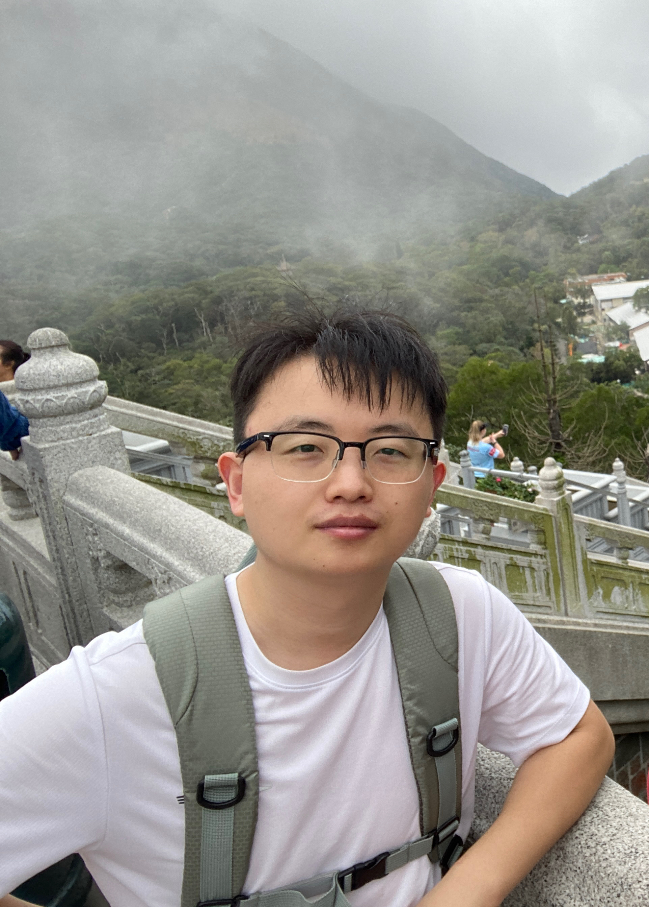
Yang Hua
He graduated first class from Tianjin University and received a Master’s degree from Zhejiang University.
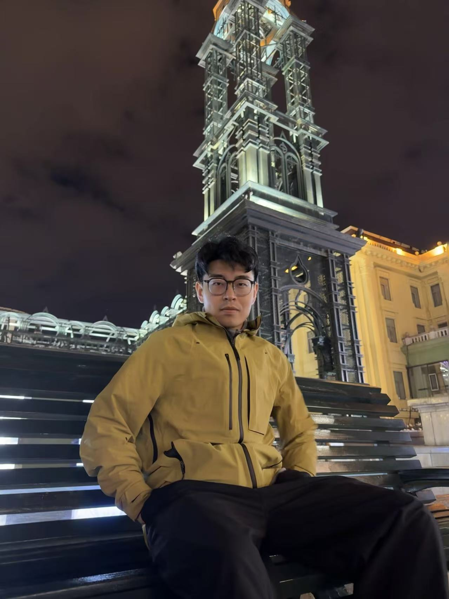
Zhang Yanming
He received Bachelor’s and Master’s degrees from South China University of Technology.
Postdoctoral Fellow
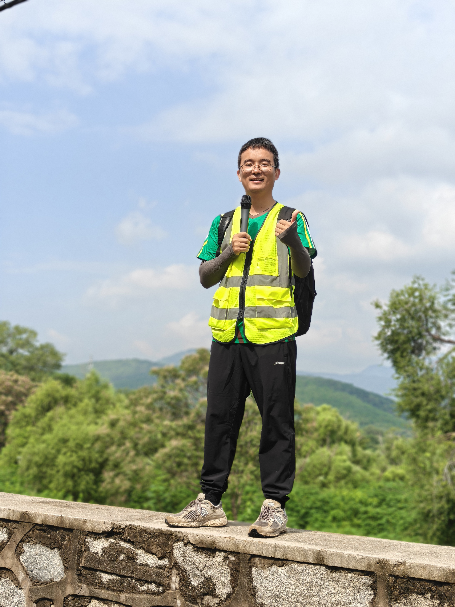
Li Wei
Studied recycled tire rubber in sand–rubber mixtures and in-situ cement-stabilized soil for sustainable reclamation. He works in China University of Geosciences as an Associate Professor.
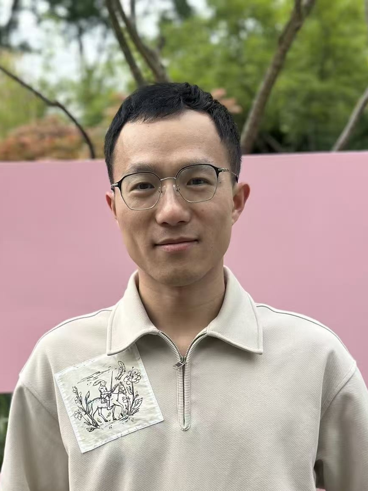
Li Mengli
He uses computational models to study coupled physical processes in geomaterials, with applications in subsurface energy and geotechnical engineering. He earned both his bachelor’s degree and his PhD in civil engineering from Tongji University.
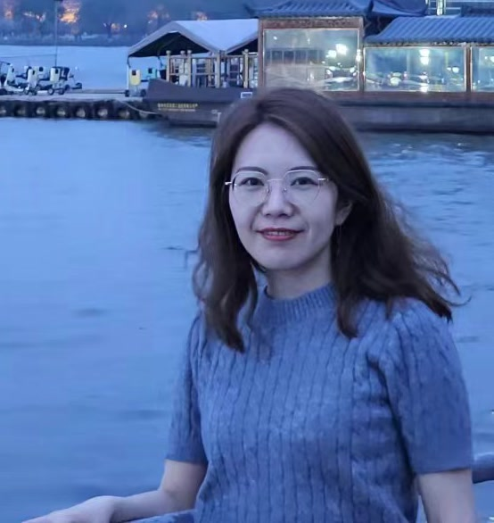
Dong Huan
She uses microfluidic platforms to study the dynamic pore-scale mechanisms for hysteretic hydrogen storage and recovery efficiency in porous media. She received her PhD from The Hong Kong University of Science and Technology.
Zhan Zhiqi
His research focuses on numerical simulation (MPM and FDM), physical modeling, and constitutive modeling of coupled multi-physical geological disasters. He received his PhD from The Hong Kong Polytechnic University.